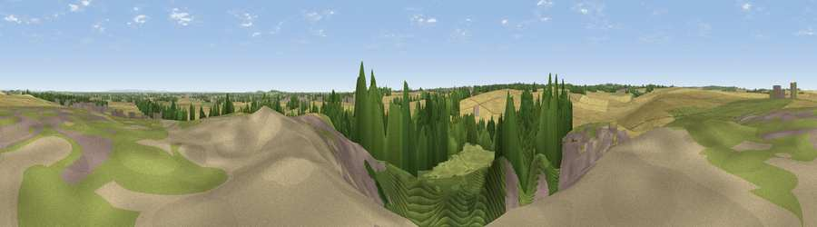

Viewpoint near Barkston Ash
#23532 in England · top 30% of its area beats it · near Barkston Ash · access?Where it is
The exact computed spot (SE 48325 35025). Click the marker for map links.
Public access: no public right of way or access land is recorded at this exact spot — it may be on private land. Computed from Natural England's CRoW access layer and OpenStreetMap rights of way — not the legal definitive map. Always verify locally.
The view, rendered

A 360° render of this exact spot computed from the terrain model, tree cover and land cover — summer colours, afternoon light, calibrated against photographs of famous viewpoints. Real trees, hedges and buildings will differ in detail.
The panorama
Grey silhouette: terrain skyline in each direction (720 bearings, Earth curvature and refraction included). Dashed green: skyline with trees (+15 m) and buildings (+8 m) as obstacles. Blue strip: how far the ground is visible on each bearing.
Where the view opens
Wedge length = distance to the farthest visible ground on that bearing (vegetation-aware). Rings at 10, 25 and 50 km.
What fills the view
57% cropland · 18% woodland · 13% built-up · 12% grassland
Angular shares of the visible panorama (visual magnitude), not map area. Landscape diversity 0.50 (0–1 Shannon).
Key numbers
More beautiful places nearby
The staircase of upgrades: each row has a higher view potential than everything closer. Driving times are estimates from straight-line distance, calibrated against real road routing — check an actual route before setting out.
| Place | Direction | Drive | Score |
|---|---|---|---|
| Viewpoint near Micklefield | WSW · 5 km | ~11 min | 65.7 |
| Viewpoint near North Rigton | WNW · 26 km | ~41 min | 66.6 |
| Rawdon Trig point | W · 27 km | ~43 min | 69.6 |
| Rawdon Billing | W · 27 km | ~43 min | 72.7 |
| Viewpoint near Otley | WNW · 30 km | ~46 min | 77.5 |
| Hood Hill | N · 46 km | ~67 min | 79.6 |
| Viewpoint near Thirlby | N · 49 km | ~69 min | 81.5 |
| Beacon Hill | N · 65 km | ~88 min | 84.7 |
53.80928, -1.26762 · source: screening · position refined by local search. Computed location — check access rights before visiting.